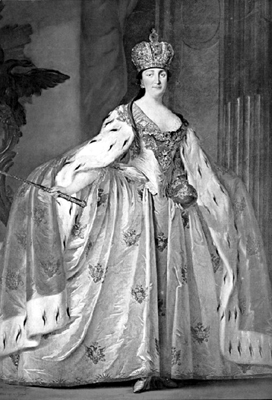
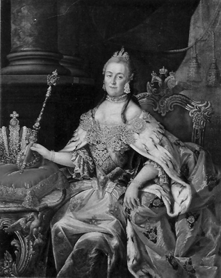

“Yıkmaktan korktuğumun altını oyarım”
Katerina
Günümüzde Rusya denilince ilk aklımıza gelen isim Putin’dir. Yaşı 30’a yaklaşanlar, komünist düzenin ipini çeken Gorbaçov’u da onun yanına ekleyebilirler. Biraz daha eşelersek Brejnev, Kruşçev, Stalin ve Lenin gibi, artık anıtlaşmış isimleri hatırlayanlarımız da çıkacaktır. Oysa bugünkü modern Rusya’nın mimarlarından biri, bir kadındı: Çariçe Katerina. Ya da Rusların ona verdiği isimle Büyük Katerina.
Rus tarihindeki aynı isimli ikinci çariçe olan Katerina, Çar Petro (ki o da ‘büyük’ sıfatı ile anılırdı) ile başlayan Batılaşma hamlesini devam ettirip, ülkesinin adını süper devletler arasına kaydettirmeyi başaran kişidir.
2 Mayıs 1729’da, bugünkü Polonya sınırları içerisinde, bir Alman prensinin kızı olarak doğdu. Doğumundan 16 yıl sonra, Rus tahtının varisi Holstein Dükü Peter’in karısı oldu. Fakat dönemin siyasi içerikli birçok evliliğinde olduğu gibi bu evliliğin de her tarafından mutsuzluk fışkırıyordu. Yine de ihtiraslı ve bir o kadar da zeki bir kadın olan Katerina, St. Petersburg’da kendisine bağlı çekirdek bir kadro oluşturmakta gecikmeyecekti. 1754’te, ileride imparator olması planlanan Paul’ü doğurdu. 1762’ye gelindiğinde, eşi III. Peter ismiyle tahta çıkmıştı.
Dengesiz, istikrarsız ve tebaasını hor görme eğiliminde olan Peter, kısa zamanda Rus cemiyeti içinde kendisine diş bileyen grupların ortaya çıkmasına sebep oldu. Bunun faturasını ödemekte gecikmeyecekti. İmparatorluk muhafızları, birkaç ay sonra, 18. yüzyıl Rusyası’na yakışır bir tarzda ilmek ilmek işlenen bir saray darbesi sonucu Peter’i devirip yerine Katerina’yı oturttular.
Aydınlanmacılarla dirsek temasına girdi
Rus tahtının yeni sahibi Katerina, Fransız aydınlanma edebiyatı ile yakından ilgiliydi ve politik zihniyeti üzerinde bu akımın büyük bir etkisi vardı. Voltaire ve Diderot gibi isimlerle sık sık yazışmalar yapıyor, çalışmalarına mali destek veriyor, hatta Diderot örneğinde olduğu gibi, sarayını bu isimlerin oyunlarına açıyordu.
Her ne kadar eylemlerinin başlangıç noktası, Batı Avrupa’da olumlu bir imaj yaratmak ise de aydınlanmanın bazı fikirlerini Rusya’daki reformları hayata geçirme ve yönetimde akılcılığı oturtma yönünde kullanma konusunda samimi ve istekli olduğu biliniyordu. Hukuk reformuna olan ilgisine karşı, 1767’de bu işi gerçekleştirmek için atadığı komisyon başarısız olmuştu. Buna karşın, döneminde ilk defa kızlara yönelik okullar açılması ve yine bu dönemde tıp okulunun kurulması, Katerina’nın başarı hanesine yazılmıştı.
İktidarının ilk yıllarında Katerina, Rus asillerinin ve özellikle belli başlı soylu ailelerin desteğini almaya özen gösterdi. III. Peter’in asillere askerlik zorunluluğunu kaldıran düzenlemesini onayladığı gibi, onlara birçok ayrıcalık tanıdı, unvan verdi, toprak ve bu toprakların işlenmesi için köleler tahsis etti. İlginçtir, toprağa bağlı kölelik açıktan açığa lanetlense de Katerina, devlete ait köleleri toprak ağalarına ve asillere vererek, köleliği daha da kurumsallaştırdı. Toprak ağalarının köleler üzerindeki etkisini yaygın hale getirdi ve köleliği yeni ele geçirilen topraklarda da uygulamaya soktu.

Çariçe II. Katerina tacını giyer giymez ülkesini
modernleştirme projelerine başladı.
Avrupa’daki birçok kişi Katerina iktidarının uzun soluklu olacağına inanmıyordu. Kanında bir damla Rusluk olmayan bir ‘Alman tohumu’ ne kadar başarılı olabilirdi ki? Öte yandan Katerina da içinde bulunduğu durumun ne kadar kırılgan olduğunun farkındaydı. İmparatoriçe Elizabeth ve Büyük Petro’nun birlikte çalıştığı bürokratlara dokunmadı. İktidarın aynı zamanda bir kadro işi olduğunun farkındaydı. Hatta pek hoşlanmasa da Elizabeth’in gözde adamlarından Şansölye Vorontzov’a da dokunmadı. Kendisine uzun yıllar danışmanlık yapacak olan Nikita Panin’i Dışişleri’ne getirdi. Yazlık Saray’da Senato’yla ilk kez buluştuğunda, ülkesinin içinde bulunduğu sosyal ve ekonomik durum karşısında hayrete düşecekti. Ordunun büyük bir kısmı halen ülke dışındaydı ve aylardır maaşlar ödenememişti. Kendi tabiri ile “ordunun hali içler acısıydı.” Yüz milyon nüfuslu ülkesinin bütçe açığı 17 milyon rubleye ulaşmıştı ve kimse hazinede ne var ne yok tam olarak bilmiyordu. Durum karanlıktı...
‘Rusya’da kaç şehir var?’
Kime dokunsanız, yolsuzluk, adaletsizlik ve kötü muameleden dert yanıyordu. Katerina, “Rusya’da kaç şehir var?” diye sorduğunda Senato’dakilerin cevap verememesi, aslında her şeyi anlatıyordu! Haritaya bakılmasını istedi. Harita yoktu! Cebinden çıkardığı 5 rubleyi, yardımcılarından birine vererek harita almaya yolladı. İşte Katerina’nın dizginlerini ele almaya çalıştığı Rusya, böyle bir ülkeydi; cahil, dağınık, bilgiden ziyade efsanelerin at koşturduğu ve Avrupa’ya kıyasla oldukça geri bir dünya.
Kararlıydı, Rusya’nın zenginliğini arttıracaktı. Madem Rusya bir tarım toplumuydu, o halde toprağa eğilmeliydi. Kremlin Sarayı’nın kalbindeki katedrallerden birinde, Novgorod Başpiskoposu’nun da katılımıyla tacını giydikten sonra St. Petersburg’a döndü. Yapılacak iş çok, aciliyet had safhadaydı.
İlk etapta tarımdaki verimliliğin arttırılması gerektiğine karar verdi. Toprağı incelemek ve uygun ürünleri belirlemek üzere uzmanlar görevlendirdi. İngiltere’deki tarım tekniklerini ve yeni yeni kullanılmaya başlanılan makineleri ülkesine getirdi. Hayvancılıkta yeni yöntemlerin benimsenmesinin kapısını açtı, at yetiştiriciliğini teşvik etti. Lakin bir sorun vardı. Bazı bölgelerde işgücü eksikti. Rusya’nın ayağa kalması gerekiyordu, ama kimin kol gücüyle? Bunun da yolunu buldu: Yabancı, özellikle de Alman gazetelerine, işçi ilanı verdi. Potansiyel işçi adaylarını cazip koşullarla ülkesine davet ediyordu. İşe yaradı da. Binlerce Alman, Katerina ve annesinin 20 yıl önce teptiği yollara düşerek Rusya’ya geldi.
Çariçe’nin bir sonraki adımı madenler oldu. Rusya’nın el değmemiş topraklarındaki cevherleri ortaya çıkarmaları için jeologları görevlendirdi. St. Petersburg’da ilk madencilik okulunu kurdurdu. Üstelik okul bünyesinde öğrencilerin eşzamanlı eğitimi için bir de maden açtırdı. Diğer yandan Rusya’nın önemli gelir kaynaklarından kürkçülüğü de göz ardı etmedi. Özellikle Sibirya kaynaklı kürk sektörünü teşvik etti.
İhtiraslı Çariçe, durmuyor, bir daldan diğerine sıçrıyordu. Moskova ve St. Petersburg gibi aşırı kalabalık iki şehir haricinde isteyen herkesin her yerde fabrika açabileceğini ilan eden Katerina sayesinde, ülke hızla kalkınmaya başladı. Bir süre sonra tarım işçileri, büyük tekstil fabrikaları işletir hale geldi. Bunun yanı sıra keten ve çanak çömlek işçilikleri, dericilik ve mobilya işlemesi gibi alanlarda da fark edilir bir canlanma görülmeye başlandı. Katerina, bu aşamada gözünü dışarıya çevirdi, günümüzün moda tabiriyle yabancı sermayeyi ülkesine davet etti. Özellikle İngiltere’den bilgi ve teknoloji ithal etmeye çalıştı, savaş gemileri ve doklar inşa edilmesi için İngiltere’den uzmanlar getirtti.
Rusya’yı dönüştürüyor...
Büyük hayalleri olan bu kadın bir tarım toplumu olan Rusya’yı neredeyse şantiyeye dönüştürüyordu. Çelik fabrikasındaki işçileri barometre, termometre ve diğer teknik cihazların yapımını öğrenmeleri için İngiltere’ye yolluyor; Moskova dışında tekstil, Yaroslov’da keten, Volga bölgesindeyse deri ve mum fabrikaları açtırıyordu. Tahta çıkışından kısa bir süre sonra ülkedeki fabrikaların sayısı 984’ten 3 bin 161’e fırlamıştı!
Çariçe ülkenin ithalat ve ihracatını tıkayan tıpaları da çıkarınca, özellikle Çin ile olan ticari ilişkilerde patlama yaşanmış; Mançurya’nın patikaları, iki ülke arasında mal taşıyan deve kervanlarıyla dolup taşmaya başlamıştı. Velhasıl, 1765’e gelindiğinde, İmparatoriçe Elizabeth’in (Yelizaveta Petrovna) bıraktığı borçların büyük bir kısmı ödenmiş, bütçe fazla vermeye başlamıştı.
Bürokrasiye savaş açtı...
Katerina, sadece ülkesinin cebi ile değil, aynı zamanda tebaasının üzerine giydikleriyle de yakından ilgilendi. Bütün vali ve generallere, emirlerindeki bölgelerin tapu kadastro haritalarını çıkartmalarını emretti. Yollar, hastaneler, köprüler inşa edilmeye başlandı. Ülkedeki memurların sayısı ikiye katlandı, bürokrasiyle savaş başlamıştı.
Çariçe şehir planlamasına da el attı, ülkedeki tüm şehirler, 1930’dan sonra Kalinin olarak isimlendirilecek olan, emperyal Rusya’nın önemli merkezlerinden Tver’e göre yapılandırılacaktı. Büyük bir ana cadde, iki büyük merkezi birbirine bağlayacaktı. Merkezlerden biri idari binalar, diğeriyse mağazalar için ayrılmıştı. Üstelik yangınla mücadele için, yolların genişliğinden binaların yüksekliğine kadar birçok alanda standart getirilmiş, Yeni Rusya, Katerina’nın vizyonuna göre ete kemiğe bürünür olmuştu.
Katerina iktidara geldiğinde ülkedeki okulların sayısı bir elin parmaklarını geçmiyordu. Eğitim için genelgeler yayınlayan Çariçe, her kasabaya en az iki, her şehre de en az 6 öğretmenli okullar kurulması yönünde talimat verdi. Üniversitelere ise fazla kafa yormuyordu. Zira henüz ülkesinde üniversiteleri döndürecek kadar yetişmiş beyin olmadığının farkındaydı. Bunun yerine daha fazla sayıda öğrencinin yurtdışına gitmesini teşvik etti.
Sağlık hizmetleri de Katerina iktidarının başında dökülen alanlardan biriydi. Özellikle çiçek hastalığına karşı savaş açan Çariçe, yurtdışından uzmanlar getirtip, Moskova ve St. Petersburg’da bu hastalıkla mücadele için özel merkezlerin kurulmasını sağladı, hatta hastalığa karşı aşıların denenmesi için bizzat gönüllü oldu. Aşıların Çariçe üzerinde işe yaradığını gören halk, tedavi merkezlerine koştu. Katerina 1763’te Rusya’nın ilk tıp okulunu da kurdurdu. Rus doktorları artık bu merkezde yetiştirilecekti. Çar Büyük Petro ülkede askeri hastaneleri ilk kurduran isimdi. Katerina ise siviller için hastaneler açtırdı, üstelik bu işi kurumsallaştırdı. Hangi yerleşim biriminde hangi sağlık biriminin olacağını bile genelgeyle netleştirmişti.

Dünyaca ünlü sanat eserlerini ülkesine getirdi, Hermitage Müzesi’ni kurdu.
Ülkesini tepeden tırnağa değiştirmeyi kafasına koyan bu kadının sahnede olduğu tek alan devlet işleri değildi. Sanat gibi bir tutkusu daha vardı. Öyle ki bugün dünyanın en görkemli müzesi olarak kabul edilen St. Petersburg’daki Hermitage’ın da temellerini o attırdı. Tahta çıktığında imparatorluk hazinesindeki sanat eserlerinin sayısı sadece birkaç düzineydi. Dünyanın tüm şaheserlerinin kendi ülkesinde olmasını isteyen Katerina, kısa zamanda bu sayıyı 3 bin 926’ya çıkartacaktı!
Katerina’nın yönetimi esnasındaki en büyük çaresizliği, toprağa bağlı köleliği, yani serfliği kaldıramamış olmasıydı. Açıkçası buna gücü yetmemişti. Zira ülkeyi dönüştürmek için bel bağladığı soyluların, topraklarının işlenmesi için serflere ihtiyacı vardı. Çariçe, bu uygulamanın kaldırılmasını gelecek kuşaklara bırakarak, sadece serflerin yaşam koşullarında iyileştirmeyi hedefleyen sınırlı uygulamalarla yetindi.
Katerina’nın bir tutkusu iktidar ise, bir diğeri de erkeklerdi! Özellikle de gözde subaylarından Gregory Orlov ve Gregory Potemkin. Olağanüstü yeteneklerle donanmış bir asker olan Potemkin, Katerina’nın adeta sağ kolu idi ve kalbini kaptırdığı kadının iktidarda kalması için tüm hünerlerini sergiliyordu. Katerina da Potemkin’e önemli devlet işlerini emanet etmekten geri kalmıyordu. Katerina ve Potemkin ikilisinin en ses getiren icraatlarından biri de Kırım’ı Osmanlıların elinden alarak tekrar Rus sınırlarına dahil etmek olmuştu.
Osmanlı sultanlarına kök söktürdü
III. Mustafa, I. Abdülhamit ve III. Selim dönemlerine rastlayan iktidarı boyunca Osmanlı ile iki kez boğaz boğaza geldi, güney sınırlarındaki bu görkemli imparatorluğun başını epeyce ağrıttı. Tahta çıkmasının üzerinden 6 yıl geçmişti ki III. Mustafa yönetimindeki Osmanlı’yla savaşan (1768-1774 Osmanlı-Rus Savaşı) Katerina, I. Abdülhamit ile Küçük Kaynarca Antlaşması’nı imzaladı, Kırım bu antlaşma ile bağımsız oldu. Bununla birlikte, tüm Rus liderlerin yüreğindeki ‘sıcak denizler’ hevesi Katerina’nın da içini ısıtmış olacaktı ki Çariçe 1783’te Kırım’ı ele geçirdi. Bu durumu kabullenmeyen Osmanlılar, I. Abdülhamit liderliğinde tekrar Ruslarla savaşa (1787-1792 Osmanlı-Rus Savaşı) girdi. Lakin bu savaştan yüzünün akı ile çıkan Çariçe oldu. Osmanlılar III. Selim döneminde Katerina’yla imzaladıkları Yaş Antlaşması’yla Kırım’ı Ruslara bırakmak zorunda kaldılar. Yenilmez armada gibi görülen Osmanlı ordusu, Çariçe’nin orduları karşısında pes etmiş ve Osmanlı ilk kez Hıristiyan bir güce toprak kaptırmıştı. Kırım’ı ele geçiren Ruslar, o tarihten itibaren burada kuracakları donanmayla Boğazlar’ı zorlayacak ve 19. yüzyıl boyunca Osmanlı’nın başını ağrıtmaya devam edeceklerdi.
1780’lere gelindiğinde Potemkin Rusya’daki en önemli adam, Rusların topraklarıysa, Baltıklardan Karadeniz’e kadar ulaşır olmuştu. Bu arada, tarihçilerin, Katerina ile Potemkin’in gizli bir törenle evlendikleri yönündeki iddialarını hatırlatmak isterim. Yine de böyle bir evliliğin gerçekleştiğini destekleyen kesin kanıtlara ulaşılmış değildir. Aşkları ise su götürmez bir gerçektir. Potemkin, son nefesine kadar Çariçe’ye bağlı kalmıştır.
Katerina, daha önce de belirttiğimiz gibi, Rusya’nın kapısını Fransız aydınlarına açmıştı. Voltaire, Diderot ve Baron von Grimm gibi isimlerle sık sık mektuplaşmış, Fransız sanatçı Etienne Falconet’e, Büyük Petro’nun büyük bir kayanın üstündeki bir ata oturmuş şekilde, görkemli bir heykelini yaptırmıştı. Bu heykeli bugün St. Petersburg’da görmek mümkün; üzerindeki “Petro Primo, Catherina Secunda” (Birinci Petro, İkinci Katerina) yazılı plakasıyla. Yeteri kadar açık bir mesaj değil mi?
Katerina 1783’te Prenses Dashkova’yı, Rus tarihinde ilk kez bir kadını, Rus Bilimler Akademisi’nin başına atadı. Çariçe aynı zamanda Diderot’nun kütüphanesini ve ölümünün ardından da Voltaire’in kitaplarını ülkesine getirtti, imparatorluk kütüphanesindeki kitap sayısını birkaç yüzden 38 bine kadar çıkarmayı başardı!
Erkek delisi miydi?
Katerina ismi ne yazık ki Türkiye’de daha çok hayali ‘Baltacı-Katerina’ denklemi içerisinde hatırlansa da bu Katerina’nın, o ‘Katerina’ ile ilgisi yok! En azından numaraları farklı! Osmanlı Sadrazamı Baltacı Mehmet Paşa ile yakınlaşarak, karşılığında Kırım’ı kopardığı palavrası ile akıllara gelen Katerina, aynı isimli çariçelerin I numaralı olanı. İkisinin arasında tam 45 yıl var. Bununla birlikte II. Katerina’nın da kadın-erkek ilişkilerinde ölçüyü kaçırdığı yönünde iddialar var. Kimi kaynaklara göre II. Katerina’nın hayatına giren erkeklerin sayısı 300’e ulaşmıştı! Kimilerine göreyse Çariçe, aslında yalnız bir kadındı. Doğduğu topraklardan uzakta, bir başka ülkenin hükümdarı olarak zor bir görev üstlenmiş, içindeki özlemi ülkesi için çalışarak ve entelektüel bulduğu erkeklerle vakit geçirerek telafi etmeye çalışmıştı.
Tarihçiler, II. Katerina’nın erkeklerle olan ilişkilerindeki çalkantıları, babasına karşı duyduğu suçluluk duygusuyla da açıklamaya çalışırlar. Katerina, babasına rağmen dinini değiştirmiş, babası bu dünyadan kızına küs olarak göçüp gitmişti. Bu durumun Katerina’yı derinden sarstığı söylenegelir. Yine de son tahlilde, çalkantılı özel hayatı ve hayatına girdiği iddia edilen onlarca erkek bir kenara bırakılırsa, Orlov ve Potemkin’in, Çariçe’nin yaşamındaki başlıca aktörler olduğunu söyleyebiliriz. Hiç şüphe yok ki, ‘kadın’ Katerina’nın yaşadıkları, ‘Çariçe’ Katerina’nın başarılarını gölgelemeye yetmemiştir.
Katerina otuz dört yıllık iktidarının ardından, 17 Kasım 1796, sabah 10 civarında banyodan çıkarken felç geçirdi, kısa bir süre sonra da hayatını kaybetti. Ertesi gün İngiliz Büyükelçisi Charles Whitworth, “Dün gece... bu eşsiz prenses inanılmaz hükümranlığını sona erdirdi” şeklinde bir rapor geçiyordu Londra’daki amirlerine. Bu arada kendisine ‘Büyük Katerina’ denilmesinin, ölümünden sonra olduğunu hatırlatmak isteriz. Kendisi sağken adının önünde bu tarz bir yüceltme sıfatı kullanılmasına itiraz etmiş, “Yaptıklarımı bağımsız bir şekilde yargılama işini, gelecek kuşaklara bırakmak isterim” demişti. Halkı ona bu sıfatı çok görmeyecekti, çünkü Rusya, Katerina’sına çok şey borçluydu.
NOTLAR